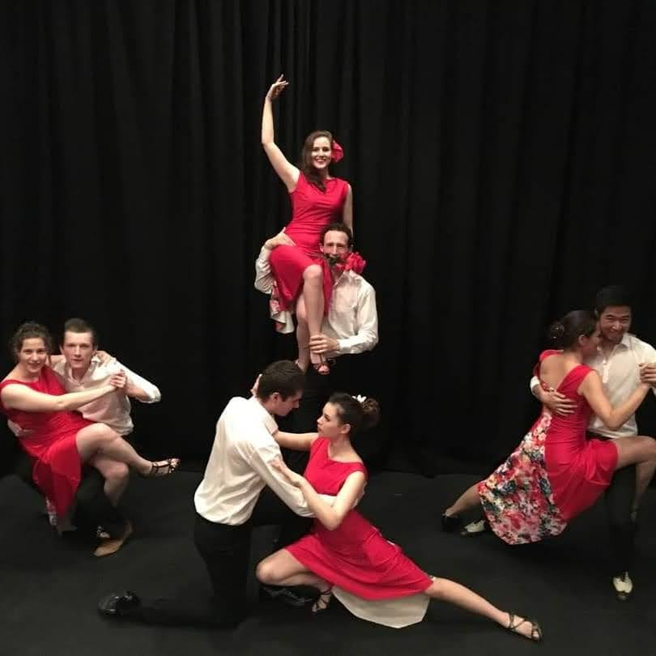
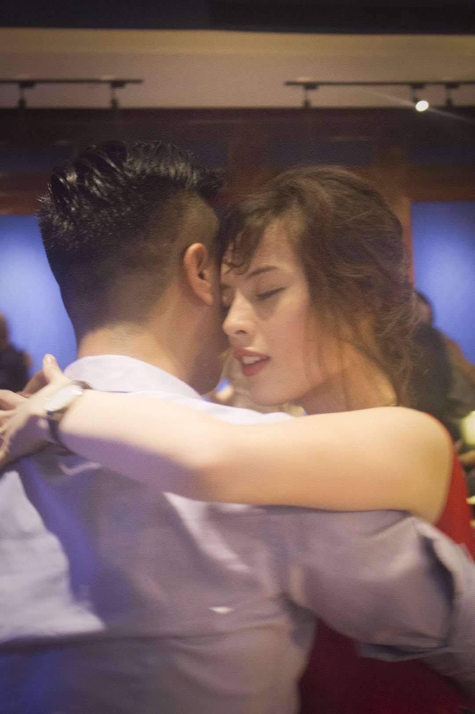
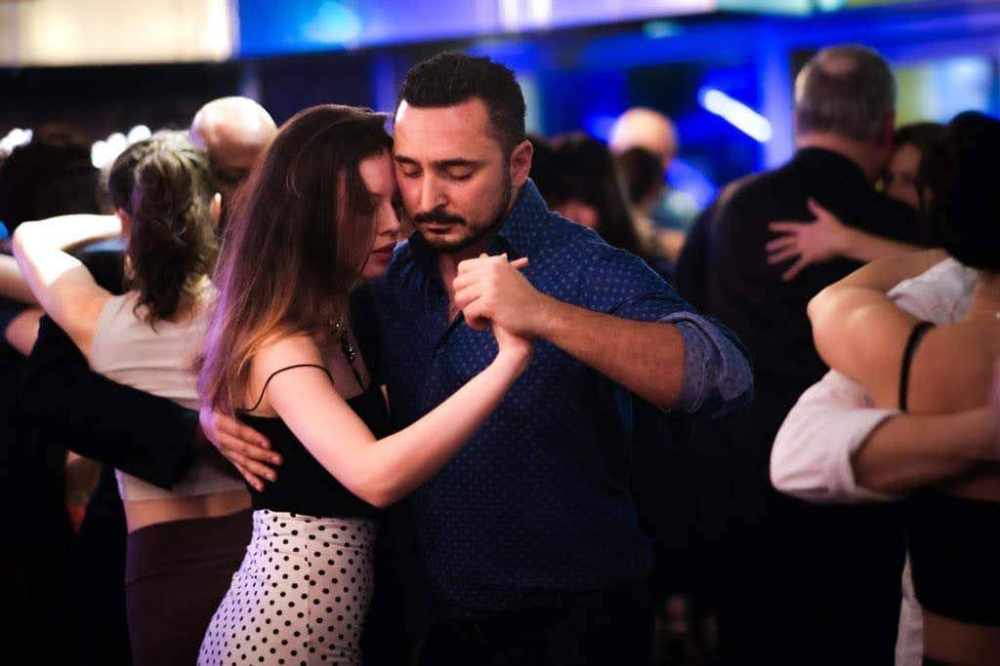

How It Started
When I arrived at Warwick University in 2014, I decided I wanted to learn to dance. Not any dance in particular, just dancing as a skill. So I did what any sensible person would do: I joined every dance society I could find.
Salsa, ballroom, contemporary, belly dance, you name it. But it was Argentine tango that stuck. There's something about tango that gets hold of you: the music, the connection, the constant pursuit of something that always feels slightly just out of reach. I was quickly hooked, and before long I'd become President of the Warwick Argentine Tango Society.
Teaching
Teaching tango has been a constant thread in my life through and I hope it continues. Every city, every group of students, every dancefloor teaches you something new
Warwick Argentine Tango Society (2014–2017)
It started at Warwick, where I taught as part of the university society. What began as classes for fellow students turned into running the society as President, organising socials, and building a community of dancers from scratch.
Shanghai (2017–2018)
After graduating, I moved to Shanghai and ran my own tango classes. Teaching a Latin American dance, in English and Mandarin, to an international crowd in China was an experience in itself.
Oxford Tango Academy (2018–2020)
Back in the UK, I became the assistant instructor for Oxford Tango Academy. During that time I helped take students on a trip to Buenos Aires, the mecca of tango. I was also on the organising committee for the 8th Oxford Tango Festival in 2019, and established weekly classes in St Albans.
Northern Tango Academy, York (2022–2023)
When I moved to York for my PhD, I got involved with the Northern Tango Academy, teaching and helping to keep the local tango scene alive in the north of England. I partnered with Julian Vilardo to teach in York, and occassionally other cities, including Milonga Corrientes in London
Tango Club UW, Madison (2025–present)
Since moving to Madison I've become the main instructor at Tango Club UW, where we run three beginners' series a year — one per semester plus a summer series — alongside a weekly intermediate class, two practicas, and our own milonga, Milonga Mimosa 🍹. Follow our growing club on Instagram.
Competing
In 2017 I competed at the UK Tango Championships in both the salon and escenario categories. Competitive tango is a different beast to social dancing: there's a panel of judges, a set format, and the pressure of performing something that's normally built on spontaneity. It was nerve-wracking and brilliant in equal measure.
🎥 Watch the qualification round on 030tango.com ↗Photos


